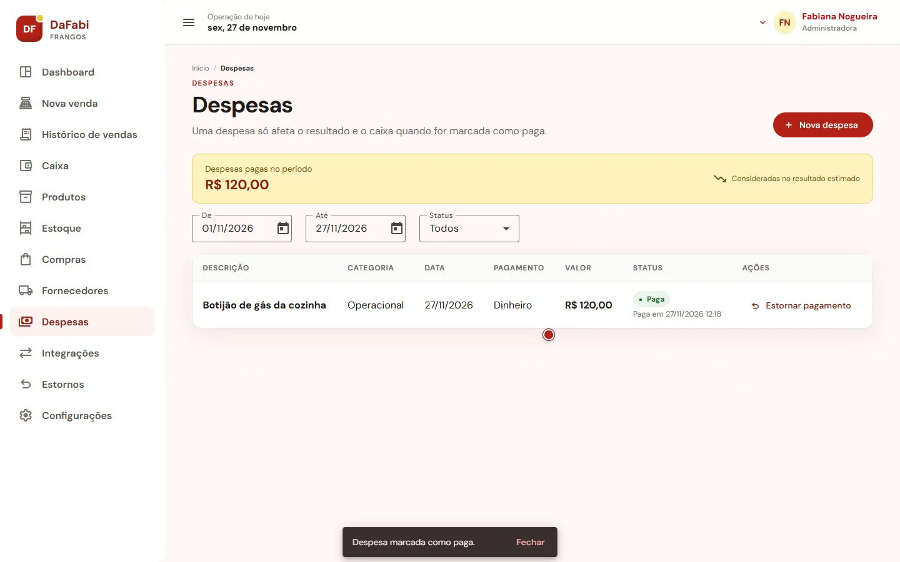

Fabiana (administradora) e operadores de caixa · branch fix/qa-25-11 (b05b67c) · 2026-11-27
Guia rápido
Uma sequência curta para começar. Consulte o manual para condições e exceções.
Abra o caixa
Conte a gaveta, digite o Saldo inicial e confirme.

Venda
Leia o código ou toque no produto, confira o total e clique em Continuar para pagamento.

Receba e dê o troco
Escolha a forma de pagamento. Em dinheiro, digite o valor recebido e devolva o Troco mostrado.

Registre a mercadoria que chegou
Administradora: Compras > Nova compra. Para frango, digite lote e validade.

Marque as despesas pagas
Administradora: registre a despesa e use Marcar como paga quando pagar.

Feche o caixa
Conte o dinheiro, digite o Valor contado e justifique qualquer diferença.